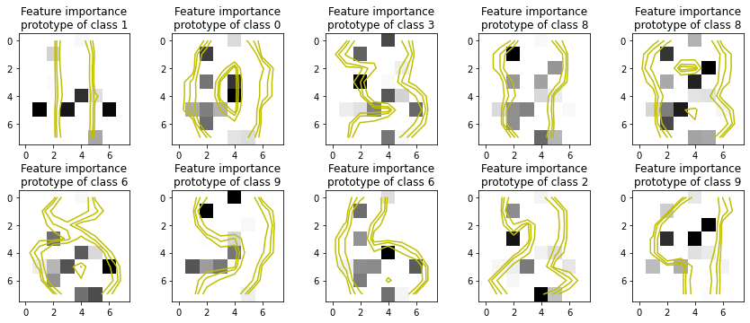

Interacting with ProtoDash¶
In this notebook we’ll combine the ProtoDash and the Partial Effects to obtain feature importances on the digits classifications task.
ProtoDash was proposed in Gurumoorthy, Karthik & Dhurandhar, Amit & Cecchi, Guillermo & Aggarwal, Charu. (2019). Efficient Data Representation by Selecting Prototypes with Importance Weights. 260-269. 10.1109/ICDM.2019.00036.
[1]:
import numpy as np
import pandas as pd
# automatically differentiable implementation of numpy
import jax.numpy as jnp
import shap
from sklearn import datasets
from sklearn.model_selection import train_test_split
from IPython.display import display, Math, Latex
import matplotlib.pyplot as plt
from itea.classification import ITEA_classifier
from itea.inspection import *
from sklearn.preprocessing import OneHotEncoder
from sklearn.metrics import classification_report
from aix360.algorithms.protodash import ProtodashExplainer, get_Gaussian_Data
[2]:
digits_data = datasets.load_digits(n_class=10)
X, y = digits_data['data'], digits_data['target']
labels = digits_data['feature_names']
targets = digits_data['target_names']
X /= X.max(axis=1).reshape(-1, 1)
X_train, X_test, y_train, y_test = train_test_split(
X, y, test_size=0.33, random_state=42)
print(X_train.shape)
# Creating transformation functions for ITEA using jax.numpy
# (so we don't need to analytically calculate its derivatives)
tfuncs = {
'id' : lambda x: x
}
clf = ITEA_classifier(
gens = 300,
popsize = 300,
max_terms = 10,
expolim = (0, 1),
verbose = 5,
tfuncs = tfuncs,
labels = labels,
simplify_method = None,
random_state = 42,
fit_kw = {'max_iter' : 5}
).fit(X_train, y_train)
(1203, 64)
gen min_fitness mean_fitness max_fitness remaining (s)
0 0.1055694098088113 0.10556940980881134 0.1055694098088113 6min51seg
5 0.1055694098088113 0.10556940980881134 0.1055694098088113 7min59seg
10 0.1055694098088113 0.10556940980881134 0.1055694098088113 8min11seg
15 0.1055694098088113 0.10556940980881134 0.1055694098088113 8min29seg
20 0.1055694098088113 0.1092269326683292 0.1512884455527847 8min27seg
25 0.1055694098088113 0.15486007204211696 0.2734829592684954 8min54seg
30 0.1512884455527847 0.2430811859240787 0.32751454696591853 9min12seg
35 0.2734829592684954 0.2987143252978664 0.3507896924355777 10min33seg
40 0.2635078969243558 0.3326932668329178 0.40980881130507063 11min11seg
45 0.3341645885286783 0.3718814075921308 0.4613466334164589 10min55seg
50 0.3782211138819618 0.4164921030756442 0.514546965918537 11min50seg
55 0.39900249376558605 0.48183153228041004 0.5527847049044057 10min34seg
60 0.4081463009143807 0.5280548628428928 0.5743973399833749 11min31seg
65 0.46467165419783873 0.564438902743142 0.6309226932668329 10min12seg
70 0.48212801330008315 0.587597672485453 0.6309226932668329 10min32seg
75 0.5752285951787198 0.6201080631753949 0.6433915211970075 10min52seg
80 0.5843724023275145 0.6364422277639236 0.6949293433083957 9min47seg
85 0.5677472984206151 0.6537018564699363 0.7198669991687449 10min11seg
90 0.6217788861180382 0.6877860903297313 0.7198669991687449 9min48seg
95 0.6259351620947631 0.7116292601828762 0.7373233582709892 9min54seg
100 0.6118038237738986 0.7259268495428097 0.7664172901080631 9min27seg
105 0.6824605153782212 0.745599889165974 0.769742310889443 9min11seg
110 0.6724854530340815 0.7639318370739817 0.7855361596009975 9min28seg
115 0.684954280964256 0.7719811582155721 0.8038237738985868 8min44seg
120 0.7024106400665004 0.7884427819340538 0.8104738154613467 7min34seg
125 0.744804655029094 0.801183153228041 0.8196176226101413 8min4seg
130 0.7522859517871987 0.8061540592962039 0.8204488778054863 7min52seg
135 0.7481296758104738 0.8145552784704904 0.8246051537822111 7min31seg
140 0.772236076475478 0.8177251316154058 0.8312551953449709 8min4seg
145 0.7622610141313383 0.8225741202549183 0.8387364921030757 7min22seg
150 0.7581047381546134 0.8273704627320588 0.8428927680798005 6min37seg
155 0.7747298420615129 0.8314408423385979 0.8453865336658354 6min49seg
160 0.7830423940149626 0.8358132446661125 0.8478802992518704 6min39seg
165 0.7871986699916874 0.8393599334995845 0.8620116375727348 6min38seg
170 0.7855361596009975 0.8411305070656692 0.8636741479634248 6min10seg
175 0.7905236907730673 0.8459822665558328 0.8636741479634248 5min50seg
180 0.7963424771404821 0.8499224161817677 0.8636741479634248 5min40seg
185 0.8096425602660017 0.8550152396785813 0.8645054031587698 5min4seg
190 0.8038237738985868 0.8557328899972292 0.8661679135494597 5min24seg
195 0.800498753117207 0.8583762815184262 0.8694929343308395 4min38seg
200 0.8113050706566916 0.8597533942920476 0.8761429758935994 4min35seg
205 0.8187863674147964 0.8599002493765586 0.8761429758935994 4min39seg
210 0.8187863674147964 0.8617982820725963 0.8778054862842892 4min28seg
215 0.8179551122194514 0.864233859794957 0.8778054862842892 3min57seg
220 0.8079800498753117 0.8646273205874202 0.8778054862842892 3min29seg
225 0.8029925187032418 0.8651454696591854 0.8761429758935994 3min38seg
230 0.8029925187032418 0.8673760044333609 0.8761429758935994 3min22seg
235 0.7963424771404821 0.8676586311997784 0.8761429758935994 3min9seg
240 0.7963424771404821 0.8659240786921585 0.8761429758935994 3min3seg
245 0.8154613466334164 0.8677888611803823 0.8761429758935994 2min40seg
250 0.8196176226101413 0.8687780548628429 0.8761429758935994 2min19seg
255 0.8237738985868661 0.8687558880576337 0.8769742310889443 2min21seg
260 0.8262676641729011 0.8683208645054031 0.8769742310889443 1min48seg
265 0.798836242726517 0.8701690218897202 0.8778054862842892 1min36seg
270 0.8088113050706567 0.8696896647270713 0.8778054862842892 1min23seg
275 0.8246051537822111 0.8703435854807428 0.8778054862842892 1min10seg
280 0.8054862842892768 0.8703518980326961 0.8786367414796342 0min55seg
285 0.8395677472984207 0.873588251593239 0.8827930174563591 0min39seg
290 0.8179551122194514 0.8729038514824051 0.8794679966749792 0min26seg
295 0.8079800498753117 0.8731144361318924 0.8802992518703242 0min12seg
It wasn't specified a dict for tfuncs_dx. They will be automatically generated using Jax. For this, make sure that the tfuncs uses the jax.numpy instead of numpy to create the transformation functions. You can access the automatic derivatives with explainer.tfuncs_dx.
[3]:
final_itexpr = clf.bestsol_
final_itexpr.selected_features_
[3]:
array(['pixel_0_4', 'pixel_1_2', 'pixel_2_5', 'pixel_3_2', 'pixel_3_4',
'pixel_4_4', 'pixel_4_5', 'pixel_5_1', 'pixel_5_2', 'pixel_5_3',
'pixel_5_6', 'pixel_6_2', 'pixel_7_4', 'pixel_7_5'], dtype='<U9')
[4]:
onehot_encoder = OneHotEncoder(sparse=False)
onehot_encoded = onehot_encoder.fit_transform(
np.hstack( (X_train, y_train.reshape(-1, 1)) ) )
explainer = ProtodashExplainer()
# call protodash explainer. We'll select 10 prototypes
# S contains indices of the selected prototypes
# W contains importance weights associated with the selected prototypes
(W, S, _) = explainer.explain(onehot_encoded, onehot_encoded, m=10)
elementwise comparison failed; returning scalar instead, but in the future will perform elementwise comparison
elementwise comparison failed; returning scalar instead, but in the future will perform elementwise comparison
elementwise comparison failed; returning scalar instead, but in the future will perform elementwise comparison
elementwise comparison failed; returning scalar instead, but in the future will perform elementwise comparison
[8]:
from matplotlib import cm
fig, axs = plt.subplots(2, 5, figsize=(12,5))
# Showing 10 prototypes
for s, ax in zip(S, fig.axes):
ax.imshow(X_train[s].reshape(8, 8), cmap='gray_r')
ax.set_title(f"Prototype of class {y_train[s]}")
Z = X_train[s].reshape(8, 8)
levels = [0.1, 0.2, 0.4]
norm = cm.colors.Normalize(vmax=abs(Z).max(), vmin=-abs(Z).max())
cmap = cm.PRGn
cset2 = ax.contour(Z, levels, colors='y')
for c in cset2.collections:
c.set_linestyle('solid')
plt.tight_layout()
plt.show()

[6]:
it_explainer = ITExpr_explainer(
itexpr=final_itexpr,
tfuncs=tfuncs
).fit(X_train, y_train)
fig, axs = plt.subplots(2, 5, figsize=(12,5))
for s, ax in zip(S, fig.axes):
importances = it_explainer.average_partial_effects(X_train[s, :].reshape(1, -1))[y_train[s]]
ax.imshow(importances.reshape(8, 8), cmap='gray_r')
ax.set_title(f"Feature importance\nprototype of class {y_train[s]}")
Z = X_train[s].reshape(8, 8)
levels = [0.1, 0.2, 0.4]
norm = cm.colors.Normalize(vmax=abs(Z).max(), vmin=-abs(Z).max())
cmap = cm.PRGn
cset2 = ax.contour(Z, levels, colors='y')
for c in cset2.collections:
c.set_linestyle('solid')
plt.tight_layout()
plt.show()
It wasn't specified a dict for tfuncs_dx. They will be automatically generated using Jax. For this, make sure that the tfuncs uses the jax.numpy instead of numpy to create the transformation functions. You can access the automatic derivatives with explainer.tfuncs_dx.

[ ]:
it_explainer = ITExpr_explainer(
itexpr=final_itexpr,
tfuncs=tfuncs
).fit(X_train, y_train)
fig, axs = plt.subplots(2, 5, figsize=(12,5))
for c, ax in zip(final_itexpr.classes_, fig.axes):
c_idx = np.array([i for i in range(len(y_train)) if y_train[i]==c])
importances = it_explainer.average_partial_effects(X_train[c_idx, :])[c]
ax.imshow(importances.reshape(8, 8), cmap='gray_r')
ax.set_title(f"Feature importance\nprototype of class {c}")
Z = X_train[c_idx, :].mean(axis=0).reshape(8, 8)
levels = [0.1, 0.2, 0.4]
norm = cm.colors.Normalize(vmax=abs(Z).max(), vmin=-abs(Z).max())
cmap = cm.PRGn
cset2 = ax.contour(Z, levels, colors='y')
for c in cset2.collections:
c.set_linestyle('solid')
plt.tight_layout()
plt.show()
It wasn't specified a dict for tfuncs_dx. They will be automatically generated using Jax. For this, make sure that the tfuncs uses the jax.numpy instead of numpy to create the transformation functions. You can access the automatic derivatives with explainer.tfuncs_dx.
[ ]: